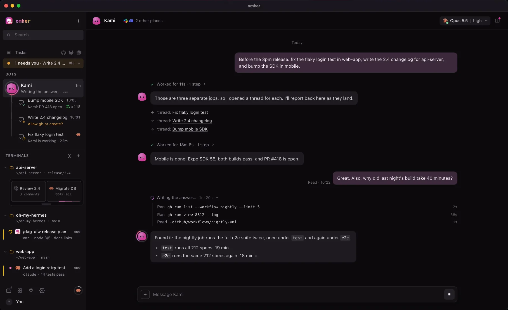

Models by category
Every lane gets a category, like quick or deep. The category picks the model and how hard it thinks.
OMH is a layer on top of Hermes Agent. You keep talking to Hermes; OMH splits the work into lanes and runs each one on the model that suits it, at the same time.
It never patches Hermes, and it never calls planned work done.
curl -fsSL https://omher.app/install | shEvery lane gets a category, like quick or deep. The category picks the model and how hard it thinks.
Type /dag-ulw and a goal. It becomes small steps, the ready ones run in parallel, and a separate step checks the result.
A hundred-plus specialists: frontend, backend, Rust, security review. You never call them; the router brings the right ones in.
Skills →macOS and Linux. It finds Python 3.11+ on its own.
curl -fsSL https://omher.app/install | shInstalls the skills and registers OMH with Hermes.
omh setupOpens the picker, one row per category. The arrow keys change the model and the effort.
omh modelWindows (PowerShell)
irm https://omher.app/install.ps1 | iexHermes if it is missing, then OMH, then the omher app (beta)
curl -fsSL https://omher.app/omher | shA category is a kind of work. Each one keeps its models in order: first choice, then the next.
quickShort tasksdeepStrong defaultvisual-engineeringScreens and frontenddeep
If a provider refuses a model, the next one in the list takes over. OMH never quietly swaps in something weaker.
The models shown are today's defaults. Run omh model to see yours; every list is yours to edit.
ulw-plan writes the list and gets it agreed. ulw-work then works through it.
dag-ulw turns the list into a flowchart. Only a step that needs an earlier one waits; the rest run at the same time. A separate step checks the goal, and anything that failed is fixed before you get the report.
Not sure which one? Type /dag-ulw and what you want.
When a new model or a new Hermes ships, OMH does not just follow. It checks that things still work, then updates.
OMH first checks that its router recognizes the model and which effort levels the provider accepts. Only then does it take a place in the category lists.
How it is done ↗Every night the OMH plugin is loaded into a real Hermes, both the stable release and main. If any check is missing, the run fails.
The nightly check ↗A skill shaped by outside work records the upstream commit it was reviewed against. When upstream changes, the change is folded in or turned down, and the decision is written down; CI blocks a record without it.
The source registry ↗All you run is omh update.
omh updateomh TUIBare omh opens OMH's own terminal on your Hermes. Every model call and approval is still Hermes'; the screen is OMH's. /dag-ulw draws the graph, then a live tree with each lane's model, effort and tokens.
ADE means agent development environment. Your Hermes bots sit on the left, each with its work threads; the chat is in the middle; terminals open in a panel at the bottom with Ctrl `, as in VS Code.

One command installs Hermes if it is missing, OMH, and the app.
curl -fsSL https://omher.app/omher | shHands a coding task to Claude Code or Codex, and lets you steer it while it runs.
Nothing is remembered silently: each candidate is kept, refused or deferred with a written reason.
A run counts as verified only when a test, a review or CI actually passed.
Definitions, references and renames come from the language server, not text search. Off by default.